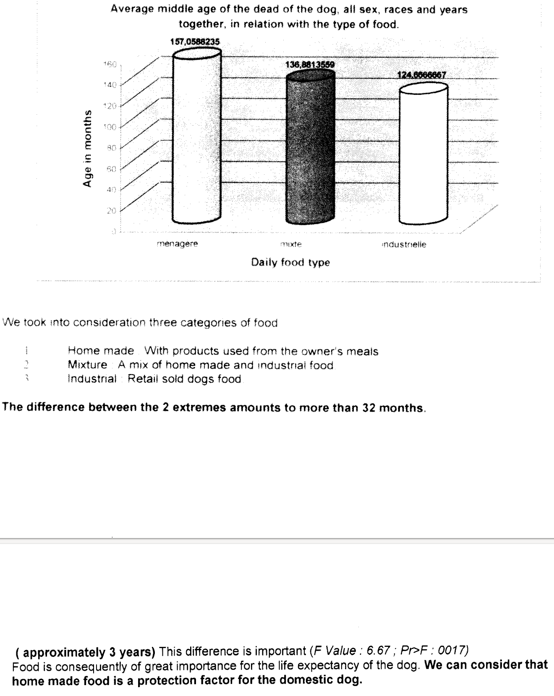

2 Anecdotes
Data is everywhere in today’s world, and access to data and facts on almost any topic is more affordable than ever. However, the abundance of information often leads to confusion and risks drawing the wrong conclusions. Even as a professor of data science, I sometimes feel overwhelmed by the sheer amount of information available.
While researchers, businesses, and individuals use facts to gain insights that are relevant to their interests, not everyone is trained to interpret data effectively, making it difficult to turn raw data into real insights.1 Many people (intentionally or unknowingly) misuse and misinterpret information and also scientific content. Many research papers exist that misapply empirical methods and therefore produce biased results or hide or disguise the potential weaknesses of the results. Numerous predatory journals are full of papers that have not undergone the rigorous peer review process typical of reputable publishers that strive to maintain qualitative standards.
1 I admit that it can be difficult to gain insights that really stand the test of time. Most empirically oriented scientists I know present their results with modesty, knowing well how heroic it is to claim to have “found evidence” in a social science study. Unfortunately and paradoxically, this modesty explains to some extend why some people are more fascinated by wrong but simple explanations presented by people with dishonest intentions.
In this chapter, I will continue the discussion started in Section 1.5 on what constitutes good research. I will examine the advantages and disadvantages of anecdotal evidence in Section 2.1, discuss how to evaluate quantitative information from public sources in Section 2.2, assess the quality of academic publications in Section 1.7, and identify literature of questionable quality in Section 1.8. . In Section 1.9, I will introduce Richard Feynman’s perspective on conducting research. Finally, in Section 1.10, I will outline how social science research is typically conducted.
2.1 From anecdote to insight
Anecdotes are great. They are true stories—often intriguing, relatable, and easy to understand. They provide vivid examples that make abstract ideas more concrete and memorable. Whether it’s a personal experience or a captivating story about a successful business leader, anecdotes resonate because they tap into our natural affinity for storytelling. Their simplicity and emotional impact can make them powerful teaching tools.
And importantly, anecdotes are hard to contradict. Take, for example, the argument that smoking can’t be that harmful because your 88-year-old uncle has smoked his entire life and he is still in good health. It’s a tough claim to refute, as it’s a real-life example. However, the problem lies in extrapolating a single, isolated case to draw broader conclusions, which can be misleading.
However, while anecdotes can be persuasive, their strength is also their weakness. They represent isolated instances, and while it’s hard to deny the truth of an individual story, the danger lies in overgeneralizing from it. Anecdotes lack the rigorous analysis and breadth of evidence necessary to draw reliable conclusions. They don’t account for the full complexity of most situations, especially in business, where decisions are influenced by many interconnected factors.
In business, relying too heavily on anecdotes can lead to misguided conclusions. For example, a company might base its strategy on the success story of a famous entrepreneur without considering the countless failed ventures that didn’t make the headlines. This is known as survivorship bias, where the successes are visible, but the failures are hidden.
The challenge, then, is to take anecdotes and go beyond them. Instead of drawing direct conclusions, use them as starting points for deeper investigation. They can provide valuable hypotheses but need to be supported by data, rigorous analysis, and an understanding of the underlying principles at play. Anecdotes can inspire curiosity and point us in interesting directions, but they should be tested against a larger body of evidence to ensure that the insights we draw are reliable and applicable in a broader context.
Exercise 2.1 Survivorship bias
Read “How Successful Leaders Think” by Roger Martin (2007). Here is a summary of Martin (2007) taken from the Harvard Business Review Store:
In search of lessons to apply in our own careers, we often try to emulate what effective leaders do. Roger Martin says this focus is misplaced, because moves that work in one context may make little sense in another. A more productive, though more difficult, approach is to look at how such leaders think. After extensive interviews with more than 50 of them, the author discovered that most are integrative thinkers–that is, they can hold in their heads two opposing ideas at once and then come up with a new idea that contains elements of each but is superior to both. Martin argues that this process of consideration and synthesis (rather than superior strategy or faultless execution) is the hallmark of exceptional businesses and the people who run them. To support his point, he examines how integrative thinkers approach the four stages of decision making to craft superior solutions. First, when determining which features of a problem are salient, they go beyond those that are obviously relevant. Second, they consider multidirectional and nonlinear relationships, not just linear ones. Third, they see the whole problem and how the parts fit together. Fourth, they creatively resolve the tensions between opposing ideas and generate new alternatives. According to the author, integrative thinking is an ability everyone can hone. He points to several examples of business leaders who have done so, such as Bob Young, co-founder and former CEO of Red Hat, the dominant distributor of Linux open-source software. Young recognized from the beginning that he didn’t have to choose between the two prevailing software business models. Inspired by both, he forged an innovative third way, creating a service offering for corporate customers that placed Red Hat on a path to tremendous success.
- Discuss the concepts introduced by Martin (2007) critically:
- Does he provide evidence for his ideas to work?
- Is there a proof that his suggestions can yield success?
- Is there some evidence about whether his ideas are superior to alternative causes of action?
- What can we learn from the article?
- Does his argumentation fulfill highest academic standards?
- What is his identification strategy with respect to the causes of effects and the effects of causes?
- Martin (2007, p. 81) speculates:
“At some point, integrative thinking will no longer be just a tacit skill (cultivated knowingly or not) in the heads of a select few.”
- If teachers in business schools would have followed his ideas of integrative thinkers being more successful, almost 20 years later, this should be the dominant way to think as a business leader. Is that the case? And if so, can you still gain some competitive advantage by thinking that way?

Source: Martin Grandjean (vector), McGeddon (picture), Cameron Moll (concept), CC BY-SA 4.0, Link
Figure 2.1 visualizes the distribution of bullet holes in aircraft that returned from combat in World War II. Imagine you are an aircraft engineer. What does this picture teach you?
Inform yourself about the concept of survivorship bias explained in Wikipedia (2024).
In Martin (2007), the author provides an example of a successful company to support his management ideas. Discuss whether this article relates to survivorship bias.
Drawing insights from anecdotes is challenging, especially in business, for several reasons:
Limited sample size: Anecdotes are usually individual cases that do not reflect the full extent of a situation. In business, decisions often require data from large, diverse populations to ensure reliability. Relying on a single story or experience can lead to conclusions that are not universally valid.
Bias and subjectivity: Anecdotes are often influenced by personal perspectives, emotions or particular circumstances. Moreover, anecdotes often highlight success stories while ignoring failures. This is an example for the so-called Survivorship Bias.
Lack of context and the inability to generalize: Anecdotes often lack the broader context necessary to understand the underlying factors of a situation. Business problems tend to be complex and influenced by numerous variables such as market trends, consumer behavior and external economic conditions. Many of these variables change significantly over time. Without this context, an anecdote can oversimplify the problem and lead to incorrect decisions. Anecdotes are usually specific to a particular time, place or set of circumstances. They may not apply to different markets, industries or economic environments, which limits their usefulness for general decision-making. For example, learning only from the tremendous success of figures like Steve Jobs while ignoring the countless people who failed is like learning how to live a long life by talking to a single 90-year-old person. If that person happens to be obese and a heavy smoker, it doesn’t mean those behaviors contributed to their longevity.
Lack of data rigor: Anecdotes lack the rigor and precision of data-driven analysis where the empirical model that allows to identify causality and to measure the effect of causes is formally described.
Thus, to make informed business decisions, it is critical to base insights on systematic data analysis rather than anecdotal evidence, as anecdotes are too narrow, subjective and unreliable to guide complex business strategies.
2.2 Information and insights
The information and the data you come across in private and professional contexts often comes from sources with specific interests that have reasons to manipulate your perception. These manipulators usually present their arguments and insights in a polemical manner and disregard counter-arguments that could weaken their position.
Without the ability to critically evaluate information and the insights derived from it, it’s easy to be manipulated by persuasive narratives. Manipulators work diligently to come up with convincing stories that feel intuitively right. For example, the tobacco industry has long successfully promoted the idea that smoking is healthy.
I see two effective strategies for recognizing manipulators, becoming a more discerning consumer of information, and improving your ability to refute fallacious arguments that yield to false insights. Firstly, identify manipulators and, secondly, be educated enough to evaluate the arguments or to consult an objective expert that can evaluate the information for you.
To recognize manipulative arguments, you should familiarize yourself with the tactics manipulators use. Below, I explain some methods manipulators use to create narratives that resonate emotionally while using misleading information to lead readers to desired conclusions:
- Emotional appeals: Manipulators often evoke fear or pity to trigger emotional responses that can undermine critical thinking. Such emotional appeals should raise suspicions about the intentions of the information provider because it is difficult to be objective when you are charged with emotion.
- Selective data presentation: Manipulators frequently cherry-pick statistics that support their arguments while ignoring contrary evidence, skewing the overall picture. A one-sided presentation sometimes demonstrates the author’s unwillingness to challenge their views.
- Manipulative language: This includes language designed to distort facts or exaggerate claims, creating an illusion of certainty or urgency that can easily mislead.
- Pseudo-expertise: Manipulators may present themselves as authorities or experts, despite lacking the appropriate credentials to back up their claims.
- Citing research: By referencing and citing research findings, manipulators capitalize on the fact that most people would have a hard time effectively disputing these claims.
Recognizing these tactics can create skepticism in the right place and motivate you to critically evaluate the claims that are being made.
To challenge manipulative arguments, you need to study the subject on your own. This often requires a solid understanding of both quantitative and qualitative research methods. I hope this course and the lecture notes can assist you in building that understanding. However, if you feel that you lack these skills, I highly recommend consulting an objective expert. The alternative is to risk becoming a potential victim of manipulation.
2.3 Case study: Dogs and votes
In business, politics, and personal life, individuals often need to gather information in fields outside their expertise to make informed decisions. The information encountered in these situations is frequently complex and challenging to understand. Therefore, it is essential to find a reliable source that offers valid and trustworthy insights. This can be a significant challenge. Evaluating the reputation of the organization and the author of the information is one strategy to avoid low-quality data, but even this can be difficult to ascertain in certain fields.
In this section, I discuss the studies by Lippert & Sapy (2003) and Curtis et al. (2021). The first study examines the quality of dog food and the life expectancy of dogs, while the latter focuses on human life expectancy and voting behavior, specifically the tendency to vote for Republicans. Despite lacking expertise in veterinary or political science, our background in quantitative methods and scientific analysis allows us to identify Lippert & Sapy (2003) as a prime example of poor research design, where empirical methods are misapplied and results are misinterpreted. This study invites readers to draw misleading conclusions and misuse the findings presented. In contrast, the study by Curtis et al. (2021) demonstrates a much stronger research approach.
Both cases should illustrate how the knowledge you gain in this course can enhance your ability to inform yourself more effectively by enabling you to evaluate the quality of the information you encounter.
2.3.1 Lippert & Sapy (2003): Life expectancy of dogs
If you love your dog, you naturally want him to live a long and happy life. However, uncovering the secrets to dog longevity can be challenging. Unlike humans, dogs don’t choose their food because they usually only eat what their owner feeds them. Therefore, owners have a responsibility to educate themselves on a proper diet for their dogs.
A quick Google search can yield a wealth of information about dog longevity. For example, here is an excerpt from luckydogcuisine.com, a company that provides fresh cooked food for dogs:
“Diet does help dogs live longer!
Here at Lucky Dog Cuisine, we believe in feeding fresh foods to our dogs. We have been doing this for over 50 years and with good reason!
In a study out of Belgium, “Relation between the Domestic Dogs: Well-Being and Life Expectancy, a statistical essay”, used data gathered from more than 500 domestic dogs over a five year time frame (1998 to 2002).
Drs. Lippert and Sapy, the authors showed statistically that dogs fed a homemade diet, consisting of high quality foods (not fatty table scraps) versus dogs fed an industrial commercial pet food diet had a life expectancy of 32 months longer – that’s almost 3 years!
It is the quality of the basic ingredients and the way they are processed that makes the difference. High heat cooking, extrusion and flaking as well as chemical treatment using preservatives and additives were found to be factors in destroying ingredient integrity.
Our fresh foods are cooked the old fashioned way using steam and then frozen. No chemicals or preservatives ever!
We’re excited to be a part of helping dogs live longer and healthier lives.”
After reading this blog post, you may feel compelled to buy high-quality food and prepare fresh meals for your dog. However, before you invest your money, you should review the information presented. After all, it comes from a company that wants to make a profit by selling fresh dog food. Therefore, you decide to do further research and read the article the blog references. As the provided link to the paper does not work, you search for the authors in literature databases such as PubMed and Google Scholar but without any results, likely because the paper has not been published in any journal or scholarly literature. After some effort with the unrestricted Google search engine, I found the paper by Lippert & Sapy (2003). It appears to be an essay that was once submitted for a prize from the Prince Laurent Foundation.
The authors write in their essay (Lippert & Sapy, 2003, p. 5):
“Our objective is to study the influence of these various parameters on the life expectancy of the dog. The statistical use of more than 500 “DOGS’ LIFE SHEETS or DOGS’ FAMILY BOOK”, collected during five years, from 1998 until 2002, will be our basic working material and will serve to extract a causality connection between quality of life, animals’ well-being and life expectancy.
We took into consideration three categories of food 1. Home made: With products used from the owner’s meals 2. Mixture: A mix of home made and industrial food 3. Industrial: Retail sold dogs food
The difference between the 2 extremes amounts to more than 32 months. ( approximately 3 years)** This difference is important (F Value : 6.67 ; Pr>F : 0017). Food is consequently of great importance for the life expectancy of the dog. We can consider that home made food is a protection factor for the domestic dog.
In Figure 2.2, I show a screenshot of the relevant pages, providing insight into the impact of food on life expectancy Lippert & Sapy (2003) claim to have found.

Source: Lippert & Sapy (2003, pp. 12–13).
There are several flaws and issues in this paper. Foremost, the interpretation of the presented results is false. Before going into details, let us clarify the meaning of the three numbers shown in the figure: They represent the average lifespan, in months, of dogs across three categories. Dogs fed with “products used from the owner’s meal” lived an average of about 157 months, those fed a “mix of homemade and industrial food” reached about 136 months, and dogs that consumed “retail-sold dog food” lived for about 124 months.
Here is an incomplete list of the weaknesses identified in the study:
Pseude-expertise:
- There are several issues, such as punctuation and spacing errors, as well as the figure mixing English and French terms while employing a three-dimensional format that is difficult to read. Additionally, the inconsistent use of bold and italics can be confusing. While these issues may seem minor, they indicate a lack of attention to detail on the part of the authors and raise doubts about the professionalism of the researchers. Although these factors may not directly affect the scientific quality of the investigation, they often correlate strongly with it and are relatively easy for readers to identify.
- The authors claim to test the differences “between the two extremes.” While it seems clear they mean the averages of homemade-fed dogs versus industrially-fed dogs, they are looking at averages, not extremes. The language used is unclear.
- In the acknowledgments, they thank several individuals for their “priceless assistance”, “erudition in statistics”, “translation into English”, and for their willingness “to read and correct the translation”. While it is commendable that they acknowledge this help, the overall impression of the article raises doubts about their academic proficiency and independence. For example, they do not relate their contribution to the current state of research as they do not have a reference list. Moreover, the dataset, with 522 observations and a dozen variables, does not appear particularly sophisticated, and the statistical tasks do not exceed the level of a Statistics 101 course. This raises the question of why two doctors of science require assistance with statistics.
Manipulative language:
- The term ‘approximately’ implies closeness; however, 36 months (three years) is actually 12.5% greater than 32 months, indicating it is not a close estimate as the authors want us to believe. A closer approximation would be two and a half years.
- The only statistical test referenced appears to be a mean difference test. The authors misinterpret this statistical significant difference by stating that “the difference is important.” Statistical significance does neither imply importance nor causality (see Section 6.1).
- Comparing the averages of two groups of dogs that are statistically different, they conclude that
- “Food is consequently of great importance for the life expectancy of the dog”,
- “home made food is a protection factor for the domestic dog”, and
- “animals who receives varying home made food, will have the benefit of a longer life expectancy.”
Selective data representation:
- The authors neither provide details on their statistical analyses nor on their data. We don’t know the sample sizes for each group, nor is the standard deviation provided for the statistics shown. The reproducibility of the paper is not given, and the transparency of their data work is low. I will discuss these issues in greater detail in Section 1.7.
Methodological issues:
As we will learn in Section 6.1, differences in the averages of the treated (homemade food) and untreated (industrial food) groups can indicate a causal effect, assuming the conditions of ignorability and unconfoundedness hold. However, the authors provide no evidence that these assumptions are satisfied. In fact, the remainder of the article presents strong arguments suggesting that these assumptions do not hold.
The dogs were not randomly assigned to the groups. The authors do not rule out the possibility that group assignments were based on characteristics such as weight, breed, and gender, which they also find associated with life expectancy. For example, larger dogs may be less likely to be fed homemade food due to the greater cost and effort required. The authors noted that breeds like Pyrenean Mountain and Big Danish dogs lived significantly shorter lives on average than smaller breeds like Poodles and Yorkshire. Thus, differences in size and other factors alike could be responsible for the observed group differences. The authors do not discuss the composition of the two groups and do not appear to have made efforts to ensure comparability. For example, they could have compared homemade-fed Poodles with Poodles fed industrially.
Even if the groups were similar, the observed averages may be influenced by confounding factors. For example, it is plausible that dogs receiving more expensive homemade food are treated differently across various aspects, including medical care-factors that may contribute to life expectancy. If this is the case, the dogs might not live longer because of the food but rather due to other factors correlated with the type of food they receive. This illustrates a classic case of bias due to omitted variables.
Overall, the information provided in the study should not be used to make causality claims about the life expectancy of dogs on average. The two authors merely compared two different groups of dogs without controlling for confounding factors and without addressing potential sources of bias.
2.3.2 Curtis et al. (2021): Life expectancy of humans
To clarify this issue further and end with a better example, consider the example from Curtis et al. (2021), which found that life expectancy within regions is positively associated with the Democratic share of votes in 2016 and 2020. However, the authors do not assert a causal relationship using sensationalist language like “voting for Republicans kills”. Instead, they critically discuss the correlations while being aware of potential sources of bias that may influence the correlation, and they do not appear to have any obvious interests in misleading the reader or over-selling their results. For example, they emphasize that the
“associations were moderated by demographic, social and economic factors that should drive health policy priorities over the coming years”
and that their
“study is limited by its ecological nature and the inability to associate individual voting behaviors with health outcomes. Additionally, the study is limited by available data sources and would benefit from more detailed social and economic data.”
Moreover, the article was published in SSM - Population Health, a well-received peer-reviewed journal from Elsevier, which is managed by professionals from prestigious universities, including Harvard and RMIT University.